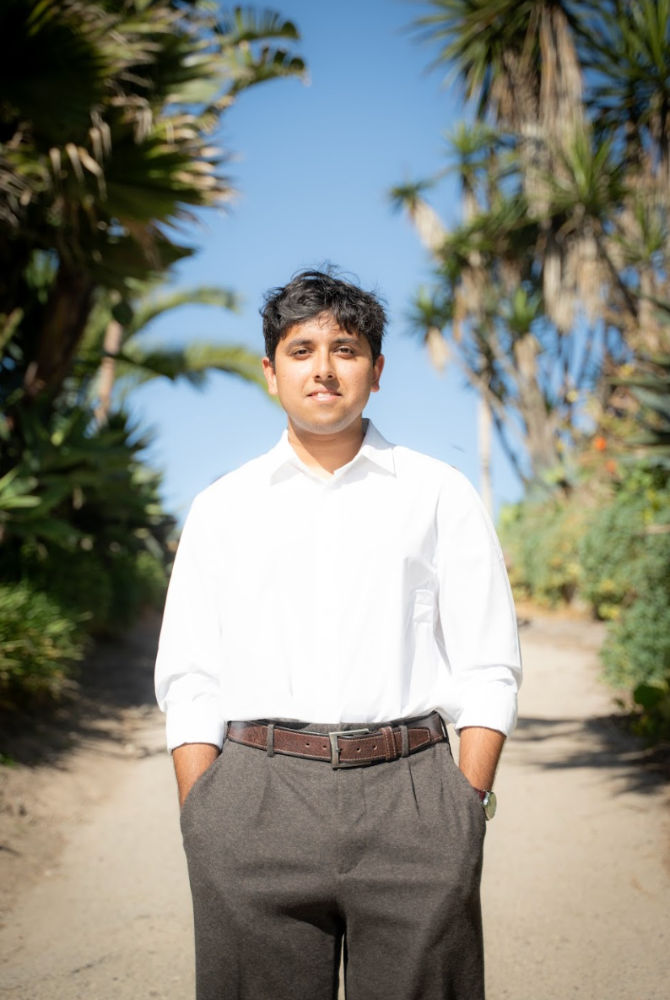

Tanish Mendki
Staff Researcher, Visual Inference Lab @ Columbia
PI: Dr. Nikolaus Kriegeskorte
I'm interested in how humans and artificial systems represent the visual world.
At Columbia's Visual Inference Lab, I'm advised by Niko Kriegeskorte, investigating representational alignment measures. I'm interested in what these measures preserve, what they ignore, and how NeuroAI can benefit from a deeper understanding of these relationships.
Before Columbia, I received a B.S. in Psychological & Brain Sciences and Statistics & Data Science at UC Santa Barbara. I was introduced to computational cognitive neuroscience through the Vision & Image Understanding Lab, working with Dr. Miguel Eckstein.
New York City | Applying for Fall 2027 PhD programs